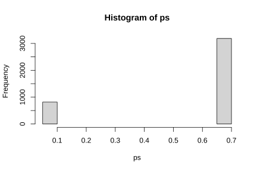
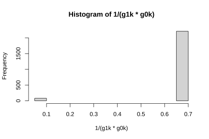

13.3 Las consecuencias de la pandemia por COVID-19 en las encuestas de la región
Siguiendo a CEPAL (2020c), en su intento por frenar la velocidad de contagio del COVID-19, los gobiernos de la región determinaron la imposición de restricciones de movilidad que truncaron la recolección presencial de las encuestas de hogares. Para hacer frente a este inconveniente y poder seguir produciendo estadísticas oficiales pertinentes y oportunas, la mayoría de INE en la región decidieron realizar el seguimiento continuo a un panel seleccionado de un periodo reciente y mediante contacto telefónico seguir con la recolección de la información primaria. Uno de los retos más importantes que esta pandemia le impuso a los INE fue la corrección del sesgo de selección en las encuestas de hogares. A pesar de los ingentes esfuerzos que se hicieron por minimizarlo durante la recolección, el cambio de un modo presencial a un modo telefónico trajo consigo consecuencias indeseadas que se pudieron enfrentar con algunas de las metodologías que se explicaron en esta sección.
En CEPAL (2020b), se afirma que un buen punto de partida para los INE fue poder contar con una muestra probabilística de meses anteriores y conformar con ella un panel de seguimiento durante el periodo en el que se tuvieron estas restricciones de movilidad. En términos de notación, llamémosla la muestra maestra. Sin embargo, se debe tener en cuenta los siguientes dos aspectos importantes:
- No todos los hogares seleccionados de forma probabilística proveyeron su información de contacto telefónico.
- No todos los hogares contactables respondieron el cuestionario de la encuesta.
Haciendo cálculos gruesos, si suponemos que la cobertura de la submuestra que sí proveyó datos de contacto asciende al 85 % y que la probabilidad de que un hogar contactado responda toda la encuesta es del 80 %, entonces contaríamos solamente con un 68% de la muestra original. A estas cuentas habría que ajustarlas con el efecto de la atrición en el panel, que crece a medida que se siga utilizando. En estos términos, sería un grave error y una suposición poco plausible asumir que los hogares respondientes efectivos se comportan de manera similar a los hogares no respondientes y a los hogares no cubiertos. El mejor escenario que puede plantearse es considerar que la muestra efectiva no está libre de sesgos, hacer una búsqueda exploratoria de su magnitud con los datos recolectados y tratar de minimizarlo (o incluso eliminarlo) utilizando alguna de las técnicas estadísticas que mencionamos en este documento.
La figura 13.6 presenta tres posibles escenarios que los INE pudieron encontrar en esta búsqueda. En el diagrama de la izquierda se verifica la ausencia de sesgo, en el diagrama del centro y en el de la derecha se confirma que la magnitud del sesgo es significativa. Nótese que la línea horizontal azul correspondería a la estimación publicada en el mes en el que se seleccionó la muestra maestra, mientras que la línea roja horizontal representa el promedio de las simulaciones con la muestra efectiva. Cada uno de los resultados de las simulaciones está representado por las fluctuaciones punteadas.

Figura 13.6: Distribuciones del estimador de Horvtiz-Thompson en tres escenarios de interés.
La figura 13.7 muestra un escenario simulado en donde se contempla el uso del estimador ajustado con la técnica de propensity score (línea verde) y el estimador de calibración en dos etapas (línea azul) comparado con el estimador sin ningún tipo de ajuste (línea negra). Lo que se esperaría es que es estimador ingenuo subestime los tamaños poblacionales y los indicadores de interés; mientras que los estimadores ajustados, siempre que el mecanismo de ausencia de respuesta sea MAR o MCAR, elimina este sesgo.

Figura 13.7: Distribuciones del estimador de Horvtiz-Thompson y de dos estimadores ajustados.
Los caminos que se deben seguir luego de corroborar la presencia (o ausencia) de sesgo dependerán de la estrategia de levantamiento de información que los países hayan decidido hacer. En el escenario más optimista, ante la ausencia de sesgo, se estaría en una buena posición para replicar los procesos usuales de inferencia. Sin embargo, ante la sospecha de que sí existe sesgo - posición parsimoniosa y recomendada por CEPAL (2020c) -, y dependiendo de la información auxiliar disponible, los INE pudieron disponer de las dos alternativas metodológicas que se describieron anteriormente.
Muchos países de la región decidieron realizar un seguimiento mensual telefónico a la muestra maestra como alternativa a las restricciones de movilidad que se han impuesto en los países y que impiden la recolección presencial de la información. En este caso, partiendo de una muestra probabilística se pueden realizar ajustes a los factores de expansión de manera diferencial (CEPAL 2020a).
En particular, dado que se tuvo acceso a todo un conjunto de covariables \(\mathbf{x}\) en la muestra maestra, fue posible determinar el mejor modelo para estimar el patrón de ausencia de respuesta en la muestra de respondientes efectivos. En este paso se asumió que la probabilidad de respuesta dependía de alguna combinación lineal de las covariables en la muestra maestra; es decir que el mecanismo que genera esa ausencia de respuesta se pudo describir mediante \(\mathbf{x}\). Teniendo en cuenta que los pesos originales de la encuesta telefónica se denotan como \(d_k\), y habiendo estimado \(\hat\phi_{k}\) para respondientes y no respondientes de la muestra telefónica, entonces el factor de expansión ajustado tomó forma \(w_k = \frac{d_k}{\hat{\phi}_k}\).
En este sentido, utilizar el factor de expansión \(w_k\) minimizaría el sesgo de selección que se generó por el cambio de modo en la recolección de la información. Por ejemplo, podría considerarse que un buen modelo de propensity score contemplase la edad, el nivel educativo, el área de residencia (rural/urbano), el sexo del respondiente, la región geográfica, el estado de ocupación en el mes de observación de la muestra maestra y el ingreso percápita del hogar. Nótese que todas las covariables en el modelo, salvo el área y la región geográfica, necesariamente provienen de las observaciones obtenidas en la muestra maestra.
Por otro lado, CEPAL (2020b) afirma que al imponer una cierta coherencia entre las cifras oficiales ya publicadas y las que la encuesta telefónica pudo producir, es preferible el uso de los estimadores de calibración. Al usar este enfoque se asegura una estructura inferencial robusta en presencia de la información disponible puesto que se reduce tanto el error de muestreo (aumentando la precisión) como el error debido a la ausencia de respuesta (eliminando el sesgo). A manera de ejemplo, podríamos considerar que las siguientes dos etapas de la calibración son suficientes para eliminar el sesgo generado por el cambio de modo de recolección:
- En la primera etapa se calibran los pesos de la muestra maestra usando las variables de edad, región, área y sexo, definidas convenientemente en \(\boldsymbol{x}_{1k}\). Los totales de estas variables se encuentran en los conteos censales o en su defecto, en las proyecciones demográficas.
- En una segunda etapa se calibrarán los pesos de la muestra telefónica usando las anteriores variables \(\boldsymbol{x}_{1k}\) y además las variables de ingreso percápita, condición de ocupación, rama de actividad y escolaridad, definidas convenientemente en en \(\boldsymbol{x}_{2k}\). Los totales de estas variables fueron estimados en la misma publicación de la encuesta basada en la muestra maestra.
13.3.1 Ejemplo
Esta sección revisa los pasos principales que se debieron considerar para erradicar (o al menos minimizar en la medida más considerable) el sesgo de selección de una encuesta recopilada durante la pandemia por COVID19. Los datos que se usarán son artificiales, pero sirven para mostrar y ejemplificar las diferentes etapas propuestas para la evaluación y minimización del impacto del COVID-19 en la calidad de las encuestas.
Supongamos un conjunto de datos artificial que define una población finita \(U\) de tamaño \(N = 50000\), y supongamos que estamos interesados en observar la situación laboral de cada persona en \(U\). En aras de la simplicidad, supondremos que una persona solo puede estar empleada o desempleada. Quisiéramos observar esta característica de interés en dos periodos diferentes \(t_0\) y \(t_1\). Por un lado, suponga que \(t_0\) corresponde a un período de recolección regular antes de la pandemia; por otro lado, supongamos que \(t_1\) corresponde al período donde las restricciones de movimiento debido a la pandemia afectaron la recolección estándar de encuestas por muestreo.
Si tuviéramos acceso a toda la población, nos encontraríamos con que en \(t_0\), el 80% de las personas estaría empleada, mientras que el 20% estaría desempleada. Sin embargo, debido al impacto de la pandemia en los indicadores sociales (e.g., pobreza y mercado laboral), en \(t_1\), observaríamos que muchas personas perdieron su trabajo, y la mitad de la población está desempleada.
El siguiente conjunto de datos muestra una versión reducida de 20 individuos de esta población finita.
| Un vistazo a la población | ||
|---|---|---|
| 20 filas de un total de 50000 | ||
| y0 | y1 | |
| 1 | Employed | Employed |
| 2 | Employed | Unemployed |
| 3 | Employed | Employed |
| 4 | Employed | Employed |
| 5 | Employed | Unemployed |
| 6 | Employed | Unemployed |
| 7 | Employed | Employed |
| 8 | Unemployed | Unemployed |
| 9 | Employed | Unemployed |
| 10 | Employed | Unemployed |
| 11..49990 | ||
| 49991 | Unemployed | Unemployed |
| 49992 | Unemployed | Unemployed |
| 49993 | Employed | Unemployed |
| 49994 | Unemployed | Unemployed |
| 49995 | Employed | Employed |
| 49996 | Employed | Employed |
| 49997 | Employed | Employed |
| 49998 | Employed | Employed |
| 49999 | Employed | Employed |
| 50000 | Employed | Employed |
Las siguientes tablas muestran los flujos netos de la población finita en los dos períodos considerados. Tenga en cuenta que \(y_0\) representa la característica de interés en el período previo a la pandemia; mientras tanto, \(y_1\) representa la característica de interés en el período de la pandemia por COVID-19.
| Flujos netos verdaderos en la población finita | ||
|---|---|---|
| Antes de la pandemia por COVID-19 | ||
| y0 | n | prop |
| Employed | 40000 | 0.8 |
| Unemployed | 10000 | 0.2 |
| Flujos netos verdaderos en la población finita | ||
|---|---|---|
| En medio de la pandemia por COVID-19 | ||
| y1 | n | prop |
| Employed | 25000 | 0.5 |
| Unemployed | 25000 | 0.5 |
La siguiente tabla muestra los flujos brutos de la población finita entre los dos periodos considerados. Como se puede observar, 25000 personas permanecieron ocupadas en los dos periodos, y 15000 personas cambiaron su situación laboral de ocupadas a desocupadas; de los desempleados en el primer período, ninguno pudo conseguir trabajo, mientras que 10000 personas permanecieron desempleadas en ambos períodos.
| Flujos brutos verdaderos en la población finita | |
|---|---|
| Cambio en el estado laboral | |
| Employed | Unemployed |
| Employed | |
| 25000 | 15000 |
| Unemployed | |
| 0 | 10000 |
La medición y observación de la situación laboral se realiza a través de una encuesta por muestreo en ambos períodos. De esta forma, supongamos que se selecciona una muestra aleatoria simple sin reemplazo \(s_0\) de tamaño \(n_0 = 4000\) de \(U\). Para simplificar, supongamos que se pretende observar la misma muestra en ambos períodos (tipo panel).
Como el lector debe considerar, la muestra anterior a la pandemia tenía un modo regular de recolección presencial. Sin embargo, dadas las restricciones de movilidad impuestas por los gobiernos para frenar la propagación de la pandemia, la modalidad de recolección del último período debió cambiar. Los INE usaron los registros de la muestra anterior (antes del COVID-19) para obtener el número de teléfono de los hogares seleccionados, tratar de hacer un contacto exitoso y administrar un cuestionario por teléfono. Por supuesto, las tasas de muestreo en ambos períodos diferirían, puesto que no todos los hogares de la primera muestra proporcionaron un número de teléfono válido y, de los válidos, no todos contestaron la encuesta telefónica.
La muestra telefónica es más pequeña (2289) que la muestra realizada cara a cara (4000). Los investigadores sospechan que los sesgos de selección no son despreciables en la muestra telefónica. Las siguientes tablas muestran los resultados basados en las muestras (no ponderados) para la encuesta cara a cara y la encuesta telefónica, respectivamente.
| Estado | n | prop |
|---|---|---|
| Employed | 3184 | 0.796 |
| Unemployed | 816 | 0.204 |
| Estado | n | prop |
|---|---|---|
| Employed | 1406 | 0.614242 |
| Unemployed | 883 | 0.385758 |
El primer paso en la búsqueda de sesgos de selección es calcular la tasa de respuesta. En este caso, de 4000 encuestados seleccionados originalmente, solo 2289 respondió a la entrevista telefónica. Lo que equivale a una tasa de respuesta de tan solo el 57 %.
Luego, se debe evaluar la naturaleza de la ausencia de repuesta. Este paso está dedicado a reconocer si la falta de respuesta sigue una estructura MAR o MCAR. Bajo el supuesto MCAR, uno no esperaría encontrar patrones fuertes en las covariables; es decir, ninguna categoría dentro de las covariables debe mostrar una tasa de respuesta diferente. Por otro lado, bajo el supuesto MAR, uno puede encontrar patrones fuertes en una o múltiples covariables. Para verificar qué supuesto (MAR o MCAR) se ajusta mejor a las observaciones de la muestra seleccionada durante el COVID19, supongamos que sí tenemos acceso a los datos de la muestra de la muestra pre-pandemia y podemos identificar a los individuos, encuestados y no encuestados, de la última muestra.
Como se ve en la siguiente tabla, de los 2289 encuestados en la encuesta telefónica, 96.5487112% estaban empleados en el período anterior, y aproximadamente 3.4512888% estaban desempleados, lo que indica un patrón sólido que puede indicar un proceso MAR.
| Estado | n | prop |
|---|---|---|
| Employed | 2210 | 0.96548711 |
| Unemployed | 79 | 0.03451289 |
Finalmente, al examinar el estado anterior de los 1711 no encuestados, se observa que casi el 56.9257744% estaban empleados en el periodo anterior, mientras que el 43.0742256% estaban desempleados. Las proporciones no son similares en ningún aspecto, lo que apunta a un posible sesgo de selección.
| Estado | n | prop |
|---|---|---|
| Employed | 974 | 0.5692577 |
| Unemployed | 737 | 0.4307423 |
Para verificar la asociación entre la respuesta en la encuesta telefónica y la situación laboral en la encuesta presencial, se puede utilizar herramientas de inferencia clásica, como la estadística Ji-cuadrado de Pearson y el estadístico V de Cramer. La siguiente tabla resume el comportamiento de la respuesta en la encuesta telefónica dada la situación laboral en la encuesta presencial.
| Estado | Respuesta | Freq |
|---|---|---|
| Employed | 0 | 974 |
| Unemployed | 0 | 737 |
| Employed | 1 | 2210 |
| Unemployed | 1 | 79 |
De la tabla anterior se puede realizar la prueba de bondad de ajuste de Pearson entre las dos variables de interés (respuesta en la encuesta telefónica y situación laboral en la encuesta presencial) para determinar si existe una correlación significativa. El sistema de hipótesis es el siguiente:
- H0: Las dos variables son independientes.
- H1: Las dos variables se relacionan entre sí.
A partir de estos datos, la estadística de prueba toma el valor de 944 (muy grande) con un valor-p muy pequeño y cercano a cero, lo que indica una fuerte relación. Finalmente, la estadística V de Cramer mide la fuerza de la asociación entre dos variables nominales, y toma valores entre cero (sin asociación) y uno (asociación fuerte). Para este caso, el valor del estadístico es cercano a 0,5, indicando una asociación significativa que debe ser considerada en los próximos pasos para minimizar el posible sesgo de selección que puede afectar la inferencia de la encuesta telefónica.
Como se pudo observar anteriormente, existe fuerte evidencia de que el mecanismo de respuesta de la encuesta telefónica depende de la situación laboral del individuo en el período anterior. Eso significa que las personas que estaban desempleadas tienden a responder menos que las personas que estaban empleadas. Para simplificar el ejemplo, asumimos que la probabilidad de ser un encuestado depende de la situación laboral anterior. De esta forma, \(\phi_k\) puede escribirse como una función de ese estado laboral anterior, incluido en las covariables \(\mathbf{z}\).
\[ {\phi}_k = f(\mathbf{z}_k, {\boldsymbol{\beta}}) \]
Como \(\phi_k\) se puede escribir como una función de las covariables disponibles, podemos afirmar que el mecanismo de respuesta sigue un enfoque MAR. Como el patrón de no respuesta es MAR, y es posible tener acceso a las covariables \(\mathbf{z}\) que determinan el mecanismo de respuesta, entonces también será posible estimar las probabilidades de respuesta por \(\hat{\phi}_k = f(\mathbf{z }_k, \hat{\boldsymbol{\beta}})\) para usarlo en la generación de nuevos pesos. Después de ajustar un modelo de propensity-score, la siguiente figura muestra el histograma de laas probabilidades de respuesta estimadas, las cuales solo toman dos valores (0.6940955 y 0.0968137 ), uno para cada categoría de la situación laboral en la encuesta presencial.

Luego, utilizando los datos telefónicos y el nuevo conjunto de ponderaciones \(d_{4k}\), ajustado por el puntaje de propensión estimado, tenemos que el número estimado de empleados en el período COVID es \(\hat{t}_y=\sum_{k\in s_{ER}}d_{4k}y_{1k} =\) 25320.72.
Por otra parte, también es posible calibrar los pesos en la muestra telefónica a nivel de la información auxiliar disponible en la muestra presencial, y luego a nivel nacional. Como el mecanismo que genera la falta de respuesta es MAR, es posible que este nuevo conjunto de pesos de calibración elimine el sesgo. Para lograr este objetivo, se encuentra un primer conjunto de pesos calibrados sujetos a la siguiente restricción:
\[ \sum_{s_0}w_{0k}\boldsymbol{x}_{k} = \sum_{U}\boldsymbol{x}_{k} = \mathbf{t_x} \]
Donde \(\mathbf{t_x}\) puede representar conteos nacionales provenientes de censos o proyecciones demográficas. Luego, en una segunda etapa, estos pesos intermedios \(w_{0k}\) deben utilizarse para calcular los pesos finales de calibración \(w_{1k}\) de la muestra de encuestados efectivos que están sujetos a la siguiente restricción:
\[ \sum_{s_0}w_{1k}\boldsymbol{x}_{k} = \begin{pmatrix} \sum_{U}\boldsymbol{x}_{k}\\ \sum_{s_1}w_{0k}\boldsymbol{z}_{k} \end{pmatrix} = \begin{pmatrix} \mathbf{t_x}\\ \hat{\mathbf{t}}_\mathbf{z} \end{pmatrix} \]
En donde, \(\hat{\mathbf{t}}_\mathbf{z}\) representa las cifras estimadas provenientes de la encuesta presencial. El estimador de calibración se puede escribir de la siguiente manera:
\[ \hat{t}_y^{cal}=\sum_{k\in s_1}w_{1k}y_{1k} \]
Después de realizar la calibración en dos etapas, y utilizando los datos de la encuestas telefónica junto con el nuevo conjunto de pesos calibradas, tenemos que el número estimado de empleados en el período COVID es \(\hat{t}_y^{cal}=\sum_{k\in s_1}w_{1k}y_{1k}=\) format r(Tyhat.cal, scientific = F). Tenga en cuenta que la forma funcional de los pesos de calibración doble resultantes de este proceso de optimización se pueden escribir de la siguiente manera:
\[ w_{1k} = d_k \times g_{0k} \times g_{1k} \cong d_k \times \hat \phi_k \]
Por lo tanto, bajo este escenario, los pesos \(g_k\) pueden verse como una estimación de las probabilidades de respuesta \(\phi_k\). La siguiente figura muestra el histograma de los puntajes de propensión pronosticados. Solo toman dos valores (0.690625 y 0.09875 ), uno para cada categoría del estatus laboral en la encuesta cara a cara.

Por último, nótese que si no se considera el mecanismo de ausencia de respuesta, sería fácil obtener estimaciones engañosas y sesgadas. Este enfoque ingenuo e incorrecto conduce al siguiente estimador sesgado
\[ \hat{t}_y^{exp}=\sum_{k\in s_1}d_{3k}y_{1k} \]
Donde \(d_{1k}\) se refiere a los pesos muestrales no ajustados de la encuesta telefónica. Bajo este escenario, el número estimado de empleados en el período COVID es \(\hat{t}_y^{exp}=\sum_{k\in s_1}d_{1k}y_{1k} =\) 30712.1.